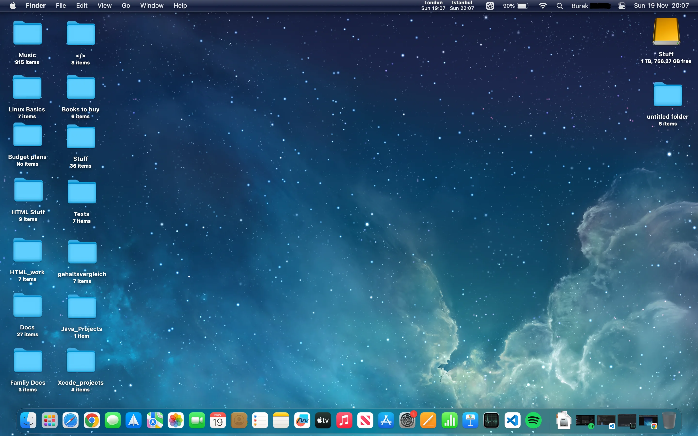

MacOS:

MacOS é sem dúvidas um dos sistemas operacionais mais caro e bonito de certa forma, criado pela Apple criado em 2001.
História:
Tudo se começa em 1984 com o antecessor do MacOS o Macintosh que trouxe uma interface gráfica revolucionária com mouse, ícones e janelas, evoluindo do
"system software" para versões mais robustas como o MacOS 8/9. Em 2001 foi uma grande virada até porque o MacOS X surgiu, mas atualmente todo mundo o chama de
MacOS mesmo.
Agora que sabemos da história um pouco curta por conta que a história inteira da Apple foi bem junta com a da microsoft, já que ambos tinham uma "competição"
o que fez com que eu contasse bem pouco sobre a história do MacOS, já que a história do MacOS também foi junta do Windows, por conta da competição, mas agora vamos ver
os lados positivos e negativos de usar MacOS:
Curiosidades sobre o MacOS:
1) A Apple usava nomes divertidos e temáticos para as versões como o "Capone" para o System7.5 numa tentativa de
superar o windows 95.
2) A organização do MacOS é bem diferente do Windows, um exemplo disso é a instalação de aplicativos que vão na pasta "Aplicativos"
para facilitar a localização e desinstalação.
3) O atalho de emojis do MacOS é CTRL + Command + Espaço.
4) O MacOS possui base Unix.
5) As ferramentas como Gatekeeper e Xprotector ajudam a proteger o sistema de software's malicosos.
Área de trabalho do MacOS para as pessoas que nuncam usaram esse sistema operacional:
